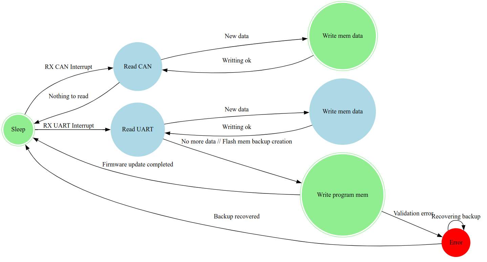
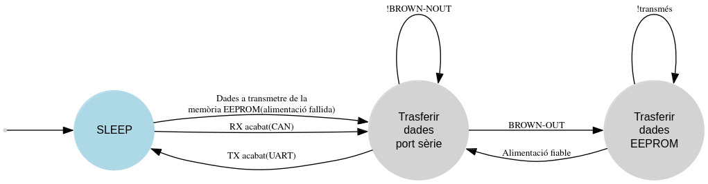

1. Microcontrolador ESP32
- Microcontrolador ESP32-WROOM-32 amb un processador de 240 MHz.
- Memòria interna SRAM de 520 KB i externa de 4 MB.
- Memòria flash externa de 16 MB per a dades persistents.
- Modos de baix consum amb memòries SRAM addicionals de 8 KB.
2. Regulador de Tensió
- Regulador principal: TSR 1-2450SM per convertir de 12-36V a 5V.
- Regulador secundari: AMS1117-3.3 per convertir de 5V a 3.3V.
- Detector Brown-Out (BOD) per gestionar caigudes de tensió.
3. Protecció de PCB
- Vernís acrílic per evitar curtcircuits per humitat o pols.
- Encapsulants epòxics per dissipació tèrmica i resistència mecànica.
4. Connexions Industrials
- Port CAN amb MCP2515 i transceptor TJA1050 per robustesa i compatibilitat.
- Port UART amb connector femella JST de 4 pins.
5. Alimentació
- Entrada de corrent continu (12-36V) o altern (280V a 50Hz).
- Sistema de seguiment de tensió i memòria EEPROM per evitar pèrdues de dades en caigudes de tensió.
6. Software
- Recepció de dades UART: configuració del port amb baud rate, paritat i control d’interrupcions.
- Recepció CAN: configuració del controlador MCP2515 per a filtres i màscares específiques.
- Gestió d’interrupcions: l’ESP32 entra en mode "deep sleep" i es desperta només amb senyals rellevants.
- Validació de dades: comprovació d’integritat amb CRC o checksum.
- Gestió de baixades de tensió: les dades no transmeses es desen a la memòria EEPROM per evitar pèrdues.
- Actualització OTA: procés per actualitzar el firmware del dispositiu sense perdre funcionalitat.
Diagrama d’estats de recepció de dades

Diagrama d’estats de transmissió
